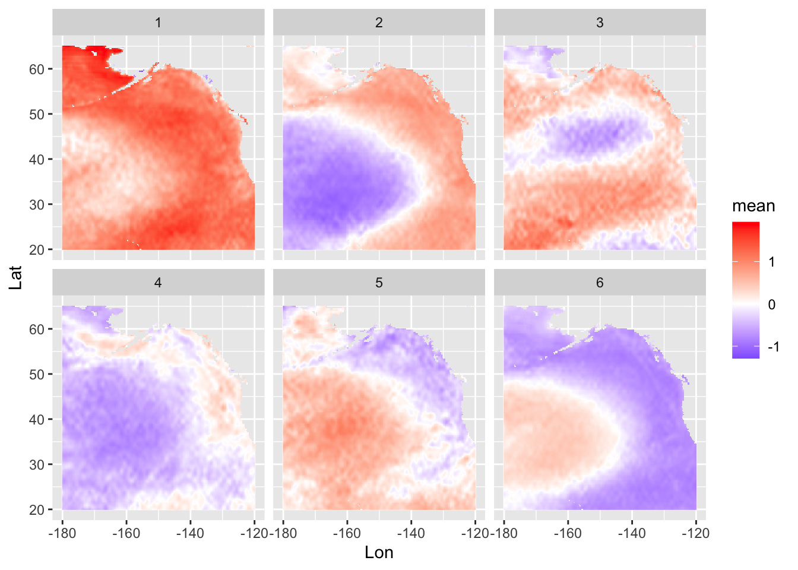
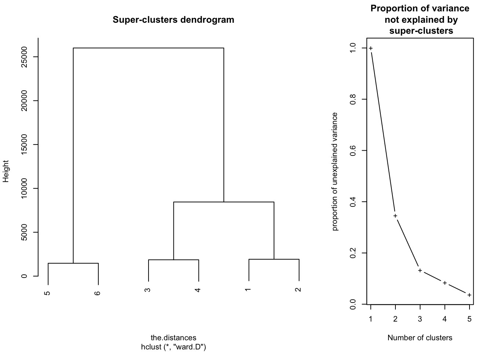
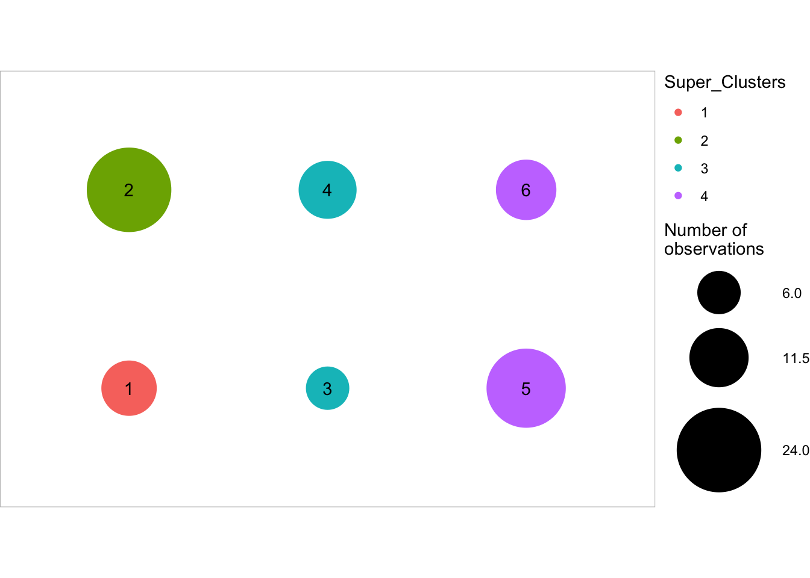
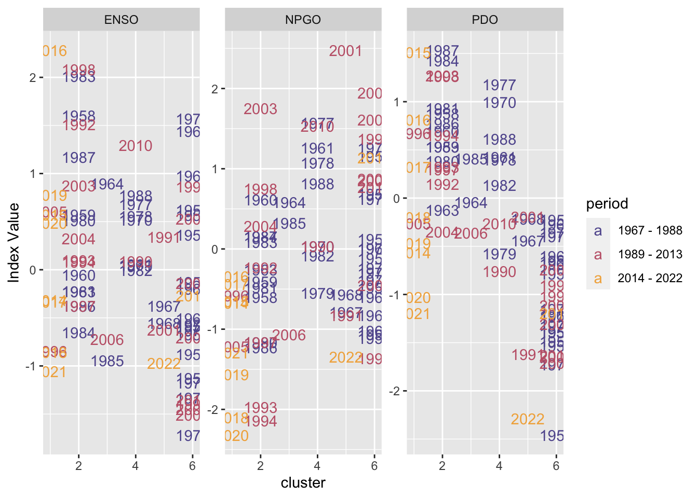
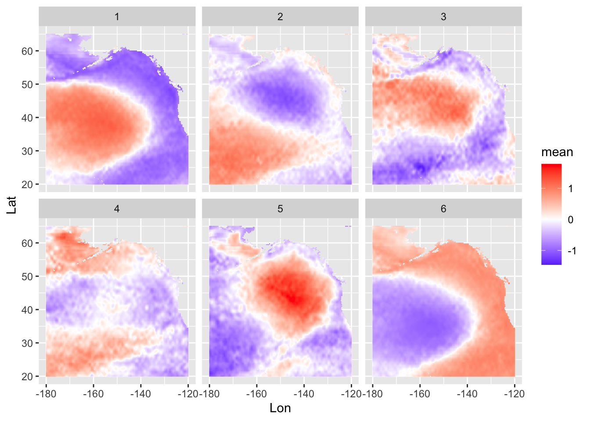
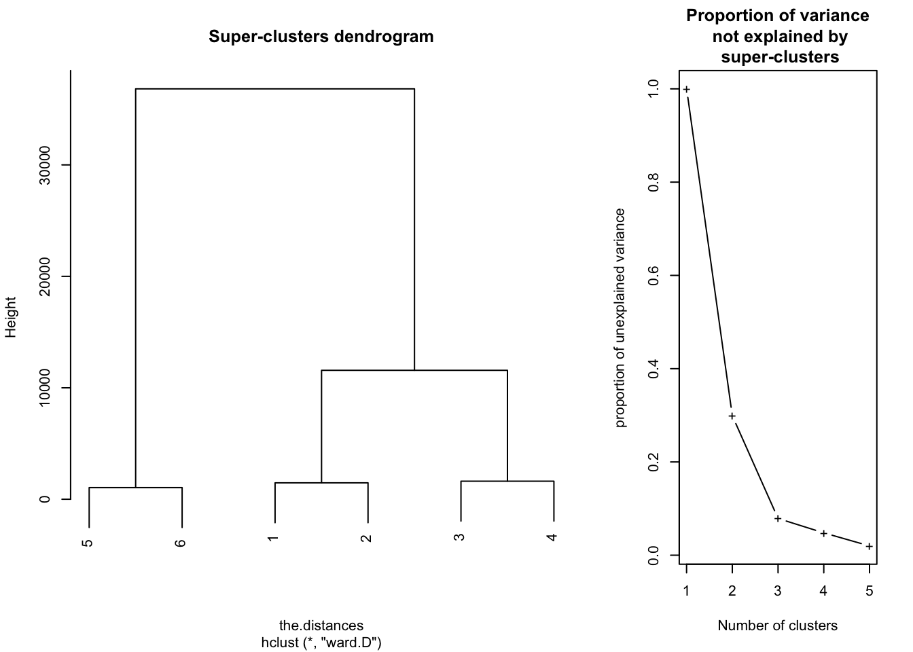
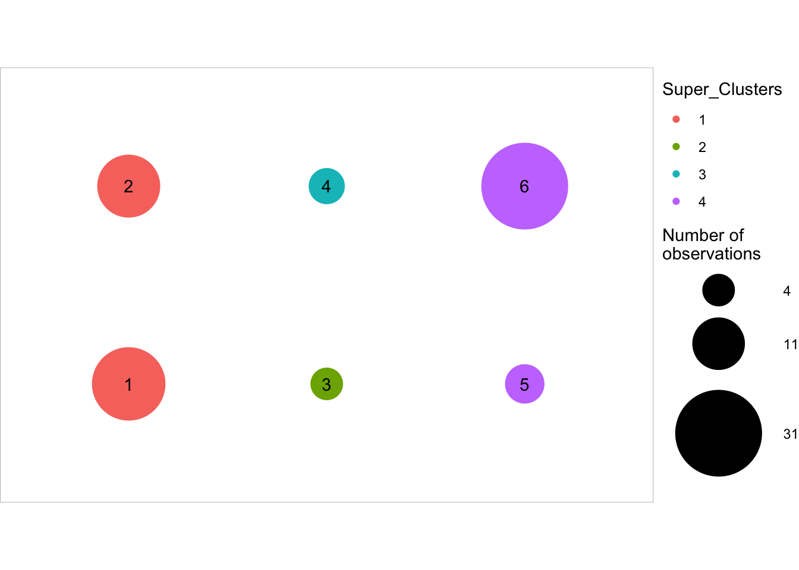
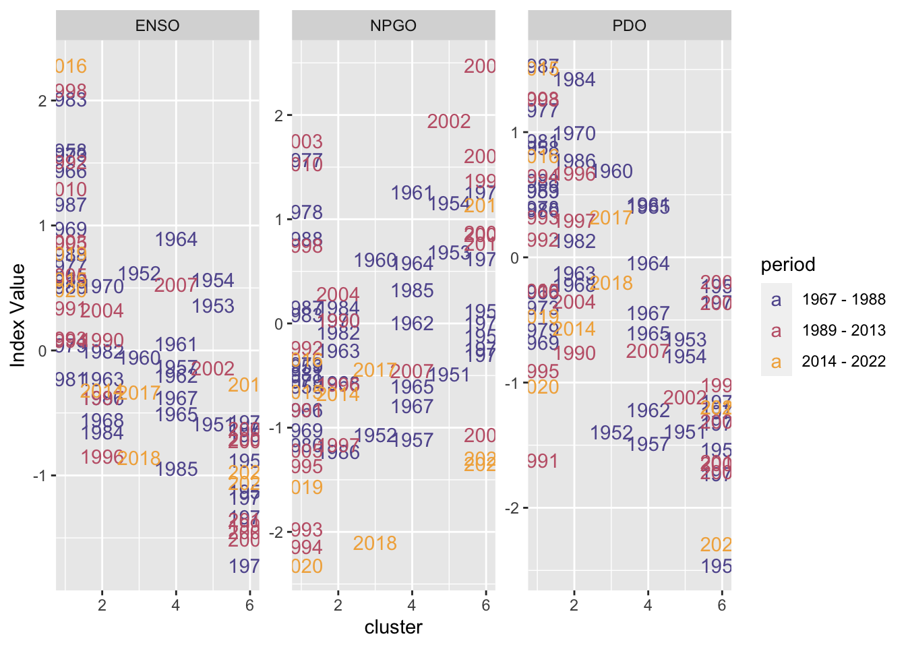

SOM examples – winter SST
SOM Setup
Now we can extract the variable of interest
var_name = "sst"Determining the dimensions (nodes)
dim <- c(3,2)Fitting the SOM model
But because of the sensitivity to grids, we should iterate over grids of varying size. Here we’ll just start with a 4x4, which should be large enough?
| winter_year | cluster |
|---|---|
| 1940 | 6 |
| 1941 | 2 |
| 1942 | 2 |
| 1943 | 3 |
| 1944 | 3 |
| 1945 | 3 |
| 1946 | 6 |
| 1947 | 6 |
| 1948 | 6 |
| 1949 | 6 |
| 1950 | 6 |
| 1951 | 6 |
| 1952 | 6 |
| 1953 | 6 |
| 1954 | 6 |
| 1955 | 6 |
| 1956 | 6 |
| 1957 | 6 |
| 1958 | 2 |
| 1959 | 2 |
| 1960 | 2 |
| 1961 | 4 |
| 1962 | 6 |
| 1963 | 2 |
| 1964 | 3 |
| 1965 | 6 |
| 1966 | 6 |
| 1967 | 5 |
| 1968 | 5 |
| 1969 | 6 |
| 1970 | 4 |
| 1971 | 6 |
| 1972 | 6 |
| 1973 | 6 |
| 1974 | 6 |
| 1975 | 6 |
| 1976 | 6 |
| 1977 | 4 |
| 1978 | 4 |
| 1979 | 4 |
| 1980 | 2 |
| 1981 | 2 |
| 1982 | 4 |
| 1983 | 2 |
| 1984 | 2 |
| 1985 | 3 |
| 1986 | 2 |
| 1987 | 2 |
| 1988 | 4 |
| 1989 | 6 |
| 1990 | 4 |
| 1991 | 5 |
| 1992 | 2 |
| 1993 | 2 |
| 1994 | 2 |
| 1995 | 6 |
| 1996 | 1 |
| 1997 | 2 |
| 1998 | 2 |
| 1999 | 6 |
| 2000 | 6 |
| 2001 | 5 |
| 2002 | 6 |
| 2003 | 2 |
| 2004 | 2 |
| 2005 | 1 |
| 2006 | 3 |
| 2007 | 6 |
| 2008 | 6 |
| 2009 | 6 |
| 2010 | 4 |
| 2011 | 6 |
| 2012 | 6 |
| 2013 | 6 |
| 2014 | 1 |
| 2015 | 1 |
| 2016 | 1 |
| 2017 | 1 |
| 2018 | 1 |
| 2019 | 1 |
| 2020 | 1 |
| 2021 | 1 |
| 2022 | 5 |
| 2023 | 1 |

Interpreting this many of SOM prototypes is challenging, and many of the maps appear to be redundant. One approach used with SOMs is post-hoc clustering of the maps. With winter SST, there appears to be ~ 4 groups:

| cluster | super_cluster |
|---|---|
| 1 | 1 |
| 2 | 2 |
| 3 | 3 |
| 4 | 3 |
| 5 | 4 |
| 6 | 4 |


| period | cluster | n | freq |
|---|---|---|---|
| 3 | 1 | 24 | 0.8000000 |
| 3 | 5 | 3 | 0.1000000 |
| 3 | 6 | 3 | 0.1000000 |
| 2 | 6 | 24 | 0.3636364 |
| 2 | 2 | 21 | 0.3181818 |
| 2 | 1 | 6 | 0.0909091 |
| 2 | 4 | 6 | 0.0909091 |
| 2 | 5 | 6 | 0.0909091 |
| 2 | 3 | 3 | 0.0454545 |
| 1 | 6 | 54 | 0.4615385 |
| 1 | 2 | 30 | 0.2564103 |
| 1 | 4 | 21 | 0.1794872 |
| 1 | 3 | 6 | 0.0512821 |
| 1 | 5 | 6 | 0.0512821 |
Alternative standardization
In the above example, we scaled the time series in each spatial cell to be Normal(0,1). That removes the spatial pattern, but not the global trend or the spatial trend. We can re-run the above models using each of these approaches.
Standardize + remove global trend
| winter_year | cluster |
|---|---|
| 1940 | 6 |
| 1941 | 6 |
| 1942 | 6 |
| 1943 | 2 |
| 1944 | 2 |
| 1945 | 2 |
| 1946 | 1 |
| 1947 | 3 |
| 1948 | 2 |
| 1949 | 1 |
| 1950 | 1 |
| 1951 | 2 |
| 1952 | 1 |
| 1953 | 2 |
| 1954 | 2 |
| 1955 | 4 |
| 1956 | 1 |
| 1957 | 1 |
| 1958 | 6 |
| 1959 | 6 |
| 1960 | 6 |
| 1961 | 6 |
| 1962 | 1 |
| 1963 | 5 |
| 1964 | 2 |
| 1965 | 1 |
| 1966 | 3 |
| 1967 | 2 |
| 1968 | 1 |
| 1969 | 4 |
| 1970 | 6 |
| 1971 | 1 |
| 1972 | 1 |
| 1973 | 3 |
| 1974 | 1 |
| 1975 | 2 |
| 1976 | 1 |
| 1977 | 6 |
| 1978 | 6 |
| 1979 | 5 |
| 1980 | 6 |
| 1981 | 6 |
| 1982 | 6 |
| 1983 | 6 |
| 1984 | 6 |
| 1985 | 4 |
| 1986 | 6 |
| 1987 | 6 |
| 1988 | 6 |
| 1989 | 2 |
| 1990 | 3 |
| 1991 | 1 |
| 1992 | 5 |
| 1993 | 6 |
| 1994 | 6 |
| 1995 | 1 |
| 1996 | 6 |
| 1997 | 6 |
| 1998 | 6 |
| 1999 | 2 |
| 2000 | 2 |
| 2001 | 4 |
| 2002 | 2 |
| 2003 | 6 |
| 2004 | 6 |
| 2005 | 5 |
| 2006 | 4 |
| 2007 | 2 |
| 2008 | 1 |
| 2009 | 1 |
| 2010 | 6 |
| 2011 | 2 |
| 2012 | 1 |
| 2013 | 1 |
| 2014 | 5 |
| 2015 | 6 |
| 2016 | 6 |
| 2017 | 6 |
| 2018 | 6 |
| 2019 | 6 |
| 2020 | 5 |
| 2021 | 1 |
| 2022 | 1 |
| 2023 | 1 |


| cluster | super_cluster |
|---|---|
| 1 | 1 |
| 2 | 1 |
| 3 | 2 |
| 4 | 3 |
| 5 | 4 |
| 6 | 4 |

